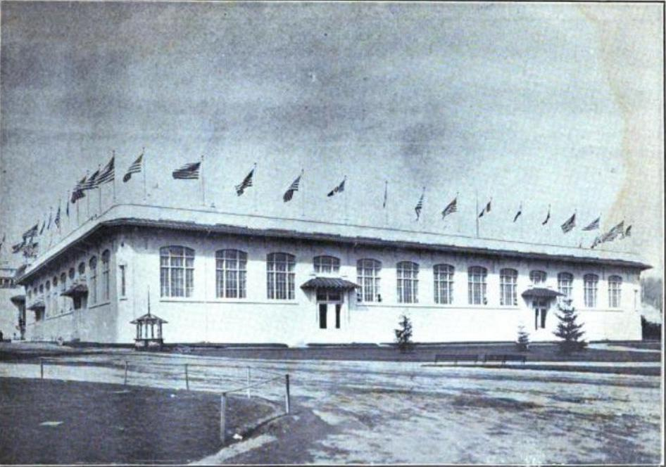

Liberal Arts Building
Location in 1905: 45.53866596, -122.70486385
PALACE OF MANUFACTURES LIBERAL ARTS AND VARIED INDUSTRIES
"Contains the varied products of many of the foremost manufacturers of our
Country. Portland Is well represented. This huilding is 240 by 430 feet on its
long side and 320 short side."
